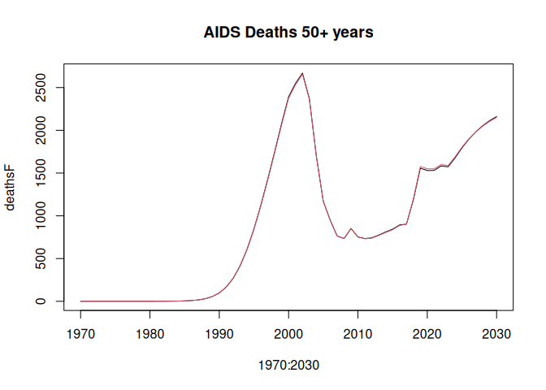

Installation
Please install from our r-universe:
install.packages(
"leapfrog",
repos = c("https://mrc-ide.r-universe.dev", "https://cloud.r-project.org"))You can install the development version of leapfrog from GitHub with:
# install.packages("remotes")
remotes::install_github("mrc-ide/leapfrog", subdir = "leapfrogr")Simulation model
The “leapfrog” R package is an R interface around the “leapfrog” simulation model. The model is written in C++ and has interfaces in R, Python and C. Note the R package is in a subdirectory leapfrogr but the installed package is called leapfrog.
The simulation model is implemented in a header-only C++ library located in leapfrogr/inst/include/. This location allows the C++ code to be imported in other R packages via specifying LinkingTo: leapfrog in the DESCRIPTION file.
[!IMPORTANT] We use C++20 for this package. Please make sure you have a compiler that is compatible.
The simulation model is callable in R via a wrapper function run_model() created with Rcpp.
You can control how the simulation model is run by setting the configuration argument, see
leapfrog::list_model_configurations()for the list of available models. At the time of writing these are - DemographicProjection - runs on the demographic projections - HivFullAgeStratification - runs the demographic projection and HIV adult projection with single-year age groups - HivCoarseAgeStratification - runs the demographic projection and HIV adult projection with 5-year age groups - ChildModel - runs the demographic projection, single-year age stratified HIV adult projection and HIV child projection
Example
The file pjnz/bwa_aim-adult-art-no-special-elig_v6.13_2022-04-18.PJNZ contains an example Spectrum file constructed from default country data for Botswana with Spectrum (April 2022).
Prepare model inputs.
library(leapfrog)
pjnz <- system.file("pjnz/bwa_aim-adult-art-no-special-elig_v6.13_2022-04-18.PJNZ",
package = "leapfrog", mustWork = TRUE)
parameters <- prepare_leapfrog_parameters(pjnz)Simulate adult ‘full’ age group (single-year age) model from 1970 to 2030 with 10 HIV time steps per year.
lsimF <- run_model(parameters, "HivFullAgeStratification", 1970:2030)You can also simulate a model with ‘coarse’ age group (5-year age groups). You need to first prepare the coarse age group parameters
params_coarse <- prepare_leapfrog_parameters(pjnz, use_coarse_age_groups = TRUE)
lsimC <- run_model(params_coarse, "HivCoarseAgeStratification", 1970:2030)Compare the HIV prevalence age 15-49 years and AIDS deaths 50+ years. Deaths 50+ years are to show some noticeable divergence between the "full" and "coarse" age group simulations.
prevF <- colSums(lsimF$p_hivpop[16:50,,],,2) / colSums(lsimF$p_totpop[16:50,,],,2)
prevC <- colSums(lsimC$p_hivpop[16:50,,],,2) / colSums(lsimC$p_totpop[16:50,,],,2)
deathsF <- colSums(lsimF$p_hiv_deaths[51:81,,],,2)
deathsC <- colSums(lsimC$p_hiv_deaths[51:81,,],,2)
plot(1970:2030, prevF, type = "l", main = "Prevalence 15-49")
lines(1970:2030, prevC, col = 2)
plot(1970:2030, deathsF, type = "l", main = "AIDS Deaths 50+ years")
lines(1970:2030, deathsC, col = 2)
lint
Lint R code with lintr
lintr::lint_package()Lint C++ code with cpplint
cpplint leapfrogr/inst/include/*Development notes
Testing
There is some pre-prepared test data available to make tests run faster. This is generated and saved ../scripts/create_test_data.R.
We also have some separate data written out in a generic format which can be read to test the model directly from C++. This is in inst/standalone_model/data in zipped files.
If this is your first time running you will need to unzip the standalone test data
If you want to update the test data, it should be updated in the ../scripts/create_test_data.R script so that we know how it was created and we can do it again fairly easily. Steps are 1. Update the script and generate the test data 1. Update the standalone data which is built from this ./scripts/update_standalone_data. You might need to add a new mapping from R to serialized name if you are adding new input data 1. Unzip this for automated tests ./inst/standalone_model/extract_data